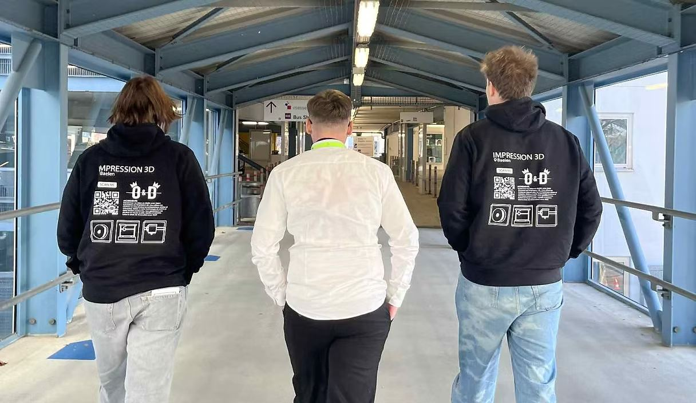

Co-founder · CNC Specialist & Programming
Owen Schimmenti
Owen runs machine programming, CNC machining and 3D printing. He is the one who turns a file into a part: settings, material, orientation, finish.
CNC MachiningProgramming3D Printing
O&D Impression 3D was founded in 2021 in Baelen, in the province of Liège, before moving to Welkenraedt in 2026. The name comes from its two founders, Owen and Donovan, who turned a passion for digital fabrication into a professional workshop serving companies, public bodies and creators.
Owen + Donovan = O&D. Two complementary profiles: the machine and the project.
Owen runs machine programming, CNC machining and 3D printing. He is the one who turns a file into a part: settings, material, orientation, finish.

Donovan follows projects from A to Z and handles 3D design: he listens to the need, models the part, has it approved and remains your contact until delivery.
A personal project around 50 cc motorbikes: the first steps in manufacturing.
Official creation in Baelen, first machines and first projects, from a garage.
A room converted into a workshop to gain comfort and capacity.
Three rooms dedicated to the business. Arrival of 3D scanning and CNC machining.
Move to our new workshop in Welkenraedt and arrival of the SuperMaker SLS 1518 and 3540 Pro.
The next chapter will be written with your projects.
A committed technical partner working alongside companies to turn their ideas into concrete, high-performing solutions.
O&D 3D is a company specialising in 3D printing, based in Welkenraedt, in the province of Liège . We support professionals in the design and manufacture of custom parts tailored to their specific needs.
Our mission: to bring fast, concrete solutions to companies. Whether for prototyping, manufacturing technical parts, replacing components that can no longer be found, optimising tooling or creating custom brackets, we put our expertise at your service.
Beyond printing, we support you from the design phase. We analyse your need, study technical feasibility and advise you on the materials and processes best suited to your constraints (strength, accuracy, lead time, budget).
As a small, human-sized business, we focus on proximity, responsiveness and flexibility. Every project is handled with care to guarantee a reliable, functional result that meets your professional requirements.
Quote requests are analysed quickly and you receive a clear answer, with a fast and competitive service.
We select the material best suited to your project's constraints, at the best price.
A machine park always ready: we produce and deliver your series as quickly as possible.
Our designer redraws the part you need: fast, reliable, affordable. Nothing is printed without your approval.
You are welcome at the workshop to talk about your projects. A direct relationship, with no middleman.
Full support, from first contact to delivery. Transparent, simple, professional.
Share your idea, need or project by e-mail, phone or form. We reply quickly to guide you.
Free & no obligationYou have a 3D file? Perfect. If not, we model the part for your functional or aesthetic need.
STL · STEP · OBJ · F3DYou check dimensions, shape and tolerances. Nothing starts without your approval.
Your approval requiredA first test part in the agreed material, to confirm everything is right before the series.
24 to 72 h depending on complexityYou test assembly, dimensions, appearance and function. Adjustments are made before production.
Your approval requiredFor large quantities, a deposit secures the order and the supply of materials.
Large quantities onlyThe machines run to meet your deadlines, with the same care as the approved prototype.
Quality control on every batchThe final invoice is sent when the parts are ready; the balance is paid before shipping.
Bank transfer · Card · PayPalParts packed and protected, reliable carriers, tracking number as soon as they ship.
Belgium & EuropeYour parts are in your hands: often the start of a lasting collaboration.
✦ Project completedWe go out to meet industry: Euronaval for naval and defence, Formnext for additive manufacturing, Batibouw for construction.



Send your 3D file or describe what you need: instant quote with a file, custom quote within 24 h.